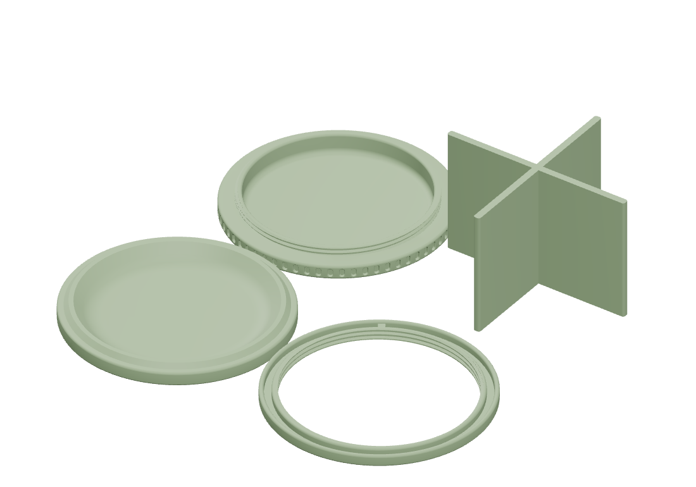

Fit undocumented
Saved project · 2026-09-27Cardboard can
Print plates
Plate 1 · saved print layout

Model preview
Print & assembly notes
Open the complete two-plate project in Bambu Studio. Saved settings: Bambu Lab P1S, 0.4 mm nozzle, Generic PLA, 0.20 mm layers, 3 walls, 15% infill, supports disabled. Use the cardboard core from a Bambu filament spool; align its notch with the nub in the printed ring.
Validation
The saved 3MF archive passed its integrity check. Previews use its plate membership, object geometry, and build transforms. Physical fit and print results are undocumented.
Project files & revisions
Earlier revisions and alternatives.
All model files for this project are listed above.